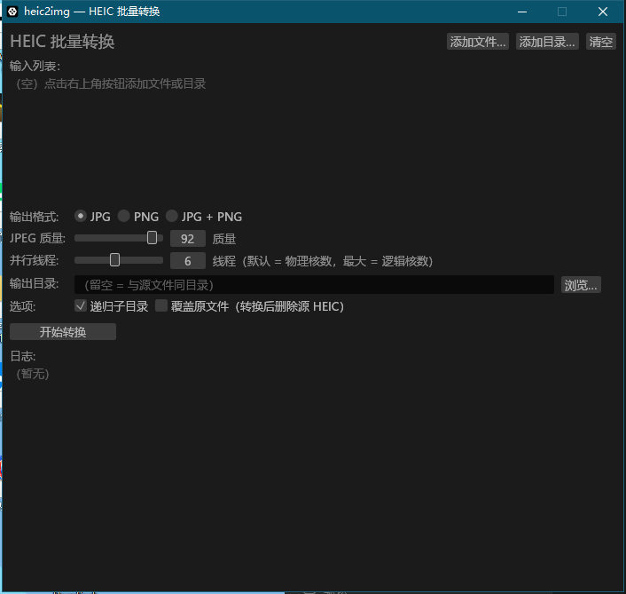

批量转换 HEIC/HEIF 为 JPG/PNG 的 Windows 桌面小工具。纯 Rust 实现，单文件 3.9MB，零外部依赖，多线程并行转换。
heic2img 解决一个高频痛点：iPhone 拍摄的 HEIC 照片无法直接在 Windows / 老旧软件中使用。它将 HEIC/HEIF 照片批量转换为通用的 JPG 或 PNG，无需安装任何解码器、运行库或 HEVC 系统扩展——解码器内嵌在 exe 中，下载即用。
| 项目 | 要求 | 说明 |
|---|---|---|
| 操作系统 | Windows 10 / 11 x64 | 32 位系统不支持 |
| CPU | 无硬性要求 | 核数越多批量越快；工具自动按物理核数设定默认线程 |
| 内存 | ≥ 512MB 可用 | 单张 12MP 照片解码峰值约 100MB |
| 显卡 | 支持 OpenGL 3.x | 仅界面渲染需要，转换本身纯 CPU；无独显也能运行 |
| 安装 | 无需安装 | 绿色单文件 exe，放任意目录双击即用 |
| 系统解码器 | 不需要 | HEIC 解码器内嵌，无需 HEVC 视频扩展 / libheif / vcpkg |
四步完成第一批转换，全程无需配置：
heic2img.exe。无安装过程、无控制台窗口，直接显示主界面。
1 2 3 4 5 6 7| 编号 | 区域 | 功能说明 |
|---|---|---|
| 1 | 添加文件… / 添加目录… / 清空 | 添加待转换照片。文件对话框支持多选（.heic/.heif）；目录模式一次纳入整个文件夹。「清空」移除列表全部条目。 |
| 2 | 输入列表 | 显示已加入的每个文件路径，右侧 × 可逐项移除。列表为空时显示占位提示。 |
| 3 | 输出格式 / JPEG 质量 / 并行线程 | 格式三选一：JPG、PNG、JPG + PNG（同时输出两种）。质量滑条 1-100（默认 92）。线程滑条默认 = 物理核数（示例机器为 6），上限 = 逻辑核数（12），一般无需调整。 |
| 4 | 输出目录 | 「浏览…」选择目标文件夹；留空 = 输出到源文件所在目录。目录不存在时自动创建。 |
| 5 | 选项复选框 | 「递归子目录」：添加目录时是否包含子文件夹（默认勾选）。「覆盖原文件」：危险操作，见下一节详细说明。 |
| 6 | 开始转换 | 启动后台并行转换；界面同时显示进度条、已完成数 / 总数、实时吞吐（张/秒）。 |
| 7 | 日志区 | 按文件顺序逐条输出结果（成功含尺寸，失败含原因）；末尾汇总成功/失败数与总耗时。转换中自动滚动到底部。 |
输出文件与源文件同名，仅扩展名变化：C006.heic → C006.jpg / C006.png。选择"JPG + PNG"时同名两个文件并存。中文文件名完整保留。
工具默认绝不碰源文件，并对已存在的同名输出自动加序号。两种模式的行为对比：
| 场景 | 未勾选"覆盖原文件"（默认） | 勾选"覆盖原文件" |
|---|---|---|
| 同名输出已存在 | 自动加序号：C006_1.jpg、C006_2.jpg，旧文件不动 | 直接覆盖旧文件 |
| 转换成功后的源 HEIC | 保留（默认安全） | 删除（输出取代源文件） |
| 转换失败时 | 源文件与旧输出均不受影响 | 源文件保留，不会被误删 |
以下为本机实测数据（Intel i5-10400F，6 核 12 线程，1280×720 HEIC 样张批量 48 张，JPG 质量 92），供预估参考；实际速度随 CPU、照片尺寸与磁盘而变化。
默认线程数自动取物理核数（本机为 6）：超线程（12 线程）对标量 HEVC 解码无收益，反而因调度开销下降，因此无需手动调满。
| 照片类型 | 单张耗时（估算） | 100 张批次（6 线程） |
|---|---|---|
| 1280×720 小图（本机实测） | ~0.11s | ~3s |
| 12MP iPhone 照片（4032×3024） | ~1s | ~1-2 分钟 |
当前性能瓶颈在 HEVC 解码（占 JPG 路径约 85% 耗时）。若未来需要更高单张速度，可考虑切换 libheif C 库后端，但会引入外部依赖、失去单文件特性，v0.1.0 未采用。
本版本唯一分发产物：heic2img.exe。发布时以下列校验值为准，下载者可用 certutil -hashfile heic2img.exe SHA256 验证。
| 属性 | 值 |
|---|---|
| 文件名 | heic2img.exe |
| 大小 | 4,071,424 字节（3.88 MiB） |
| SHA-256 | 1881C30D7F6DFFA48DACA18E646908823D2C8D52E28ABF066A770039699E7C07 |
| MD5 | DF12272AE53E0F589ECF628D8F22374F |
| PE 子系统 | 2（GUI，无控制台窗口） |
本机无 MSVC C++ 工具链，使用 Rust GNU 工具链编译（依赖均为纯 Rust，无 C 代码）。完整工具链配置：
rustup toolchain install stable-x86_64-pc-windows-gnu
# PATH 需包含 MinGW binutils（as.exe / dlltool.exe）
# 本机位置：F:\AIData\tools\bu\ucrt64\bin（MSYS2 binutils 2.47）
# 系统库 import lib 已提取至 F:\AIData\tools\winsyslibs（40 个）
# 项目 .cargo\config.toml 已配置 rustflags 的 -L 指向
cargo +stable-x86_64-pc-windows-gnu build --release
# 单元测试（7 个）
cargo +stable-x86_64-pc-windows-gnu test --release
# 性能基准（可选）
cargo +stable-x86_64-pc-windows-gnu test --release bench -- --ignored --nocapture
产物路径：target\release\heic2img.exe。发布 profile 已启用 LTO、单 codegen-unit、strip、panic=abort；GUI 依赖按体积优化（opt-level="s"），转换热路径依赖（heif-oxide / jpeg-encoder / image）保持全速（opt-level=3）。
v0.1.0 发布前全部检查项已完成（2026-08-19 实测）：
建议以 zip 压缩包分发，内含三件套：
heic2img-v0.1.0-win64.zip
├── heic2img.exe # 主程序（4.07MB）
├── 使用说明.html # 本文档第一部分（可直接浏览器打开）
└── RELEASE-NOTES.txt # 版本更新说明（可选）
heic2img-v{版本}-win64.zip，版本号与 Cargo.toml 一致